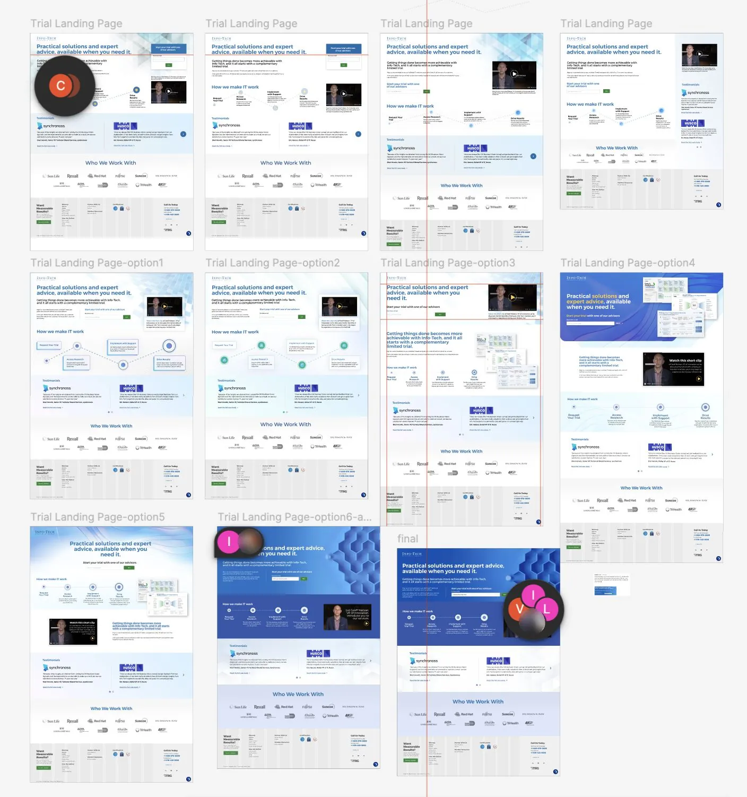

Request a Demo
Lead-generation landing page and sign-up flow for booking a personalized demo with an Infotech advisor.
- Company
- Infotech
- Timeline
- 2023
- Tools
- Figma · Photoshop
- Code
- Tailwind CSS
Prototype of the scheduling step: the visitor picks a day, then chooses from the available call times. If they press Next without choosing a day, the form asks them to select one. Video has no sound.
My contribution
Designed
- Visual design of the full page
- Page UX: layout and content flow, from hero to testimonials and client logos
- Sign-up flow, designed with a UX designer
Coded
- Front end of the page
- Multi-step sign-up form
Overview
The page invites IT leaders to book a personalized demo. It pairs a short sign-up form with a four-step overview of how Infotech works, customer testimonials and client logos to build trust.
It was part of a Marketing project to revamp the free trial experience for prospects.
The challenge
- Goal: more prospects completing the free trial request.
- Measure of success: more form submissions from the page.
- Audience: prospects arriving from the website and marketing emails.
The brief asked for
- A light page with plenty of white space, no more than 2–4 scrolls long.
- Text no smaller than 12px.
- Labels above each field that stay visible while people type.
- A carousel of linked case studies on desktop, and a single case studies link on mobile.
Exploring layouts


Layout explorations in Figma, from early versions through six options to the final design. Click to enlarge.
The sign-up flow
Key decision: start with just an email
Showing the full form up front is a lot of details to ask for, and it puts people off before they’ve started. After reviewing the existing process with the dev team, I made the first step a single field: a business email.
The form service still needed every field, so instead of cutting any, I moved them to the next step. That evened out the effort across the flow, so no step feels like too much.
Steps
- Email: one field to start.
- Contact info: name, company, job title, job function, phone and email, to check or complete.
- Schedule a call: pick a day, then a one-hour time slot.
- Confirmation: the booked day and time, a reminder to check your inbox, and a Reschedule button.
When something goes wrong
- Missing or invalid details: each field says what’s needed, and Next stays off until it’s fixed.
- No day or time chosen: a prompt to pick one before continuing.
- Scheduling down: an apology and a prompt to try again later.
Missing or invalid details: each field explains what’s needed, such as a 10-digit phone number or an email in the format thing@business.com. Video has no sound.
Scheduling unavailable: if the booking system is down, the form apologizes and asks the visitor to try again later. Video has no sound.
Result
- Form submissions from the page went up after launch.
- The page has since moved to Infotech’s new branding, but the structure and flow I designed are still live.